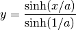

SinhStretch¶
-
class
astropy.visualization.SinhStretch(a=0.3333333333333333) [edit on github][source]¶ Bases:
astropy.visualization.BaseStretchA sinh stretch.
The stretch is given by:

Attributes Summary
inverseMethods Summary
__call__(values[, out, clip])Transform values using this stretch. Attributes Documentation
-
inverse¶
Methods Documentation
-
__call__(values, out=None, clip=True) [edit on github][source]¶ Transform values using this stretch.
Parameters: values :
ndarrayor listThe input values, which should already be normalized to the [0:1] range.
out :
ndarray, optionalIf specified, the output values will be placed in this array (typically used for in-place calculations).
clip : bool, optional
If
True(default), values outside the [0:1] range are clipped to the [0:1] range.Returns: new_values :
ndarrayThe transformed values.
-